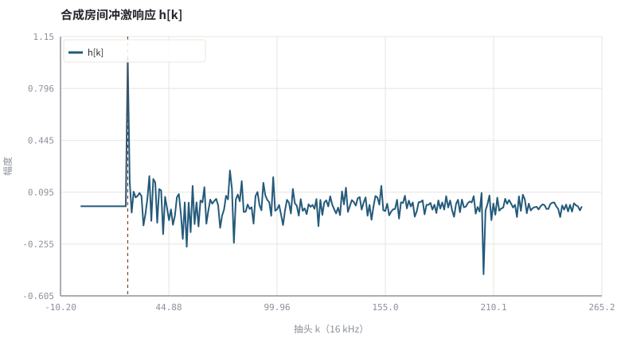
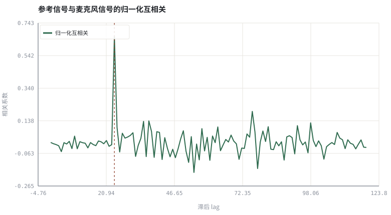

第 01 章声学链路与信号模型：房间、麦克风与回声路径
把「扬声器放出来的声音又被自己收回去」写成可辨识的线性系统。
本章位置：第 00 章 · 3A 是什么：一条实时语音链路上的三个约束 给出链路与三个约束，本章把 h 具体化；第 02 章 · 采样、量化与时频表示：从 PCM 到 STFT 提供观察 h 与信号的时频工具，第 03 章 · 怎么算「变好了」：客观指标、尺度与主观听测 约定评价指标。
RIR 是一个长度为 L 的 FIR 系数数组，AEC 是在线系统辨识：输入 x、观测 y、目标 d，求一组 ĥ 使预测误差最小。时延对齐相当于先给这段数组找到正确的起始下标。
- 能画出声学回声链路并写出卷积模型。
- 能解释房间冲激响应的直达声、早期反射与混响尾。
- 能用互相关估计回声路径的时延并核对真值。
- 能说明非线性失真、时钟漂移与双讲为何让模型失效。
§知识点地图
每个知识点都配了 1～2 个扩展学习链接；本章完整资源清单见 扩展学习。
| # | 知识点 | 扩展学习 | 状态 |
|---|---|---|---|
| 1 | 声学回声链路 | Echo cancellation ↗ · WebRTC AEC3 模块 ↗ | 正文已覆盖 |
| 2 | 房间冲激响应 RIR | pyroomacoustics ↗ · The Scientist and Engineer's Guide to DSP ↗ | 正文已覆盖 |
| 3 | 直达声与早期反射 | pyroomacoustics ↗ · Echo cancellation ↗ | 正文已覆盖 |
| 4 | 混响时间与 T60 | pyroomacoustics ↗ · Echo cancellation ↗ | 正文已覆盖 |
| 5 | 线性卷积模型 | The Scientist and Engineer's Guide to DSP ↗ · SciPy signal ↗ | 正文已覆盖 |
| 6 | 时延估计与互相关 | pyroomacoustics ↗ · Echo cancellation ↗ | 正文已覆盖 |
| 7 | 双讲场景 | ITU-T G.168 ↗ · Microsoft AEC Challenge ↗ | 正文已覆盖 |
| 8 | 非线性与时钟漂移 | pyroomacoustics ↗ · Echo cancellation ↗ | 正文已覆盖 |
§1.1从扬声器到麦克风是一条 LTI 通道
e[n] = (h * x)[n] = Σ_{k=0}^{L−1} h[k] · x[n−k] ，y[n] = d[n] + e[n] + v[n]
h 是房间冲激响应：先是一段静默（声波传播 + 缓冲），然后是直达声脉冲，接着是几次离散的墙面反射，最后是指数衰减的密集混响尾。AEC 的全部工作，本质上是在双讲与噪声干扰下在线估计 h 并用它预测 e。
| RIR 区段 | 物理来源 | 对 AEC 的影响 |
|---|---|---|
| 直达延迟 | 扬声器到麦克风距离 + 系统缓冲 | 决定滤波器起始位置，估计错则整段抵消失效 |
| 早期反射 | 桌面、墙壁的一次/二次反射 | 稀疏强系数，自适应滤波器需覆盖 |
| 混响尾 | 多次散射，能量指数衰减 | 尾长决定滤波器阶数（16 kHz 下常取 128–512 ms） |
| 非线性 | 扬声器削波、外壳振动 | 线性模型无法解释，需要残余回声抑制或神经后处理 |
§1.2三个让模型失效的现实
- 双讲：近端与远端同时说话，
d[n]不再是「安静的噪声」，自适应滤波器会把近端语音当成误差、把 h 往错误方向更新。 - 时钟漂移：播放与采集用不同晶振，采样率有 ppm 级偏差，等效于 h 缓慢平移；不做缓冲对齐会让 ERLE 周期性塌陷。
- 路径突变：有人移动笔记本、手掌挡住麦克风，h 在几十毫秒内整体改变，滤波器需要快速重收敛。
工程上因此把问题拆成三层：时延对齐（粗对齐，见本实验）、线性自适应滤波（见上卷第二篇）、残余抑制（处理非线性与双讲残差，见第 11 章与下卷）。
§Python 实验
实验 1-1 · 合成房间冲激响应并用互相关找回真实时延
#!/usr/bin/env python3
# -*- coding: utf-8 -*-
"""生成含直达声与混响尾的 RIR，卷积出回声，再用归一化互相关估计延迟。
全部语音 / 噪声 / 房间冲激响应均为代码合成信号，仅用于教学演示机制与量级。
"""
from __future__ import annotations
import math
import pathlib
import random
import statistics
import sys
import time
_here = pathlib.Path(__file__).resolve()
for _p in _here.parents:
if (_p / "tools" / "dsp.py").exists():
sys.path.insert(0, str(_p / "tools"))
break
from dsp import (SAMPLE_RATE, fft, hann, stft, istft, magnitude_db, spectrum,
white_noise, tone, chirp, synthetic_speech, rir, convolve,
fft_convolve, delay, clip, normalize_peak, rms, rolling_rms,
smooth, db, energy_db, snr_db, erle_db, seg_snr_db,
scale_align, si_sdr_db, lufs_approx,
write_wav, read_wav, wav_info)
from chart import Chart, heatmap, BLUE, RED, GREEN, AMBER
FIG = _here.parents[1] / "fig"
AUDIO = _here.parents[1] / "audio"
FIG.mkdir(exist_ok=True)
AUDIO.mkdir(exist_ok=True)
random.seed(7)
# ---- 参数区 ----
N = 12000
TRUE_DELAY = 24 # 真实直达声延迟（样本）
RIR_LEN = 256 # 冲激响应长度
DECAY = 0.008 # 混响能量衰减时间常数（秒）
CORR_LEN = 2048 # 互相关累加点数
MAX_LAG = 120 # 搜索的最大延迟
# ---- 计算与作图 ----
rng = random.Random(7)
far = synthetic_speech(rng, N)
probe = white_noise(rng, N, 0.35) # 宽带探测信号：自相关接近冲激，便于对齐
h = rir(rng, RIR_LEN, decay=DECAY, direct_delay=TRUE_DELAY)
echo = fft_convolve(far, h)[:N]
near = [0.30 * v for v in synthetic_speech(rng, N)]
mic = [near[i] + echo[i] for i in range(N)]
probe_echo = fft_convolve(probe, h)[:N]
mic_probe = [probe_echo[i] + 0.3 * near[i] for i in range(N)]
# 归一化互相关：用参考信号 x 与麦克风 y 找最强线性相关的滞后
def norm_corr(a, b, lag, k):
num = sum(a[i] * b[i + lag] for i in range(k))
da = math.sqrt(sum(a[i] ** 2 for i in range(k)))
db_ = math.sqrt(sum(b[i + lag] ** 2 for i in range(k)))
return num / (da * db_ + 1e-12)
lags = list(range(MAX_LAG))
corr = [norm_corr(probe, mic_probe, lag, CORR_LEN) for lag in lags]
best_lag = lags[max(range(len(lags)), key=lambda i: corr[i])]
peak = max(corr)
c = Chart(FIG / "01-rir.svg", "合成房间冲激响应 h[k]", xlabel="抽头 k（16 kHz）", ylabel="幅度")
c.line(range(RIR_LEN), h, BLUE, label="h[k]")
c.vline(TRUE_DELAY, RED, label="真实直达延迟")
print("冲激图:", c.save())
d = Chart(FIG / "01-corr.svg", "参考信号与麦克风信号的归一化互相关",
xlabel="滞后 lag", ylabel="相关系数")
d.line(lags, corr, GREEN, label="归一化互相关")
d.vline(best_lag, RED, label="峰值")
print("互相关图:", d.save())
write_wav(AUDIO / "01-far.wav", normalize_peak(far))
write_wav(AUDIO / "01-mic.wav", normalize_peak(mic))
print("真实延迟=%d 估计延迟=%d 峰值相关=%.3f | 直达增益=%.3f RIR能量=%.4f" %
(TRUE_DELAY, best_lag, peak, h[TRUE_DELAY], sum(v * v for v in h)))
print("混响时间常数=%.4f s 理论 T60≈%.3f s（指数衰减到 -60 dB）" %
(DECAY, 6.9 * DECAY))操作：对照估计延迟与 TRUE_DELAY；把 TRUE_DELAY 改成 60 再跑一次。 预期与判读：互相关峰值精确落在真实直达延迟，因为 y 中含 h*x；这里刻意用白噪声探测信号而非语音做对齐——语音有准周期自相关，会产生旁峰把峰值拉偏。近端语音只贡献不相关背景，使峰值幅度下降但位置稳定。这正是工程上「先粗对齐、再自适应」的第一步。
改参数看趋势：把 near 幅度调大到与回声相当（模拟强双讲），峰值会变钝甚至偏移。 文件位置：part0/01-acoustic-path/code/01-rir.py


01-far.wav
远端参考信号（扬声器播放的内容）（16 kHz / 16-bit 单声道，代码合成信号，不是真实录音）
01-mic.wav
麦克风：近端语音 + 回声（16 kHz / 16-bit 单声道，代码合成信号，不是真实录音）
代码块右上角可一键复制；仓库里的 code/*.py 由 tools/extract_code.py 从这些代码块自动抽取。脚本只用标准库、固定 random.seed(7)，运行后写出 fig/*.svg 与 audio/*.wav；批量运行用 ./tools/run_python.sh。
§可选真机命令片段
以下命令不参与批量运行，需要本机自行安装对应工具。滤镜是否可用取决于本机 ffmpeg 版本与编译选项，请先用 ffmpeg -filters / ffmpeg -version 自查，并以 https://ffmpeg.org/ffmpeg-filters.html 与各自官方文档为准；本书不假定任何特定版本具备某项能力。
用 ffmpeg 合成一条可听的回声样本（无需写代码）
ffmpeg -hide_banner -i input.wav -af \
"aecho=0.8:0.9:1000|1800:0.25|0.15" echo.wav
ffmpeg -hide_banner -i echo.wav -af volumedetect -f null - 2>&1 | grep -E 'mean_volume|max_volume'说明：aecho 用「输入增益:输出增益:延迟ms|延迟ms:衰减|衰减」叠加延迟副本；该滤镜是否在本机可用请先用 `ffmpeg -filters | grep aecho` 自查。
§本章参考资料
按本章知识点挑选的精读资料；更多检索入口见 扩展学习。
§常见误区
- 忽略播放与采集缓冲造成的几十毫秒延迟，直接让自适应滤波器硬追。
- 把混响尾当噪声，滤波器阶数不够导致 ERLE 上不去。
- 用纯线性模型解释扬声器削波造成的非线性回声。
- 在双讲时照常更新 h，把滤波器「带跑」。
§习题与思考
- 推导 16 kHz 下 128 ms 混响需要多少抽头，并说明算力代价。
- 解释为什么互相关峰值会被强双讲拉偏。
- 列举三种会改变 h 的日常动作，并给出检测思路。
§扩展学习
继续检索
- Google Scholar：room impulse response acoustic echo path model ↗
- arXiv：room impulse response acoustic echo path model ↗
- GitHub：room impulse response acoustic echo path model ↗
全书链接总表见 FFmpeg Filters 文档 ↗ 与 附录 A.7；滤镜是否可用请以本机 ffmpeg -filters 为准。
§延伸阅读与内链
- 第 09 章 · AEC 总体结构：参考信号、线性滤波与残余抑制 AEC 总体结构；第 11 章 · 残余回声抑制与 WebRTC AEC3 结构 AEC3 的对齐与双讲处理。